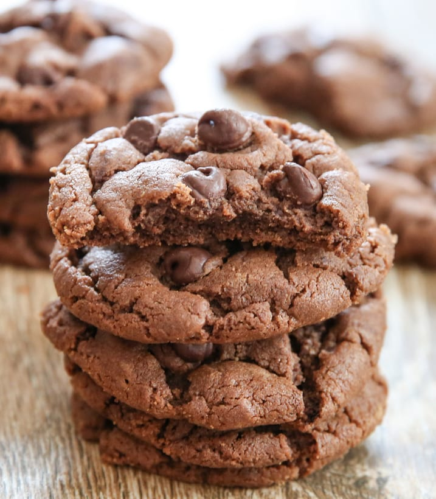
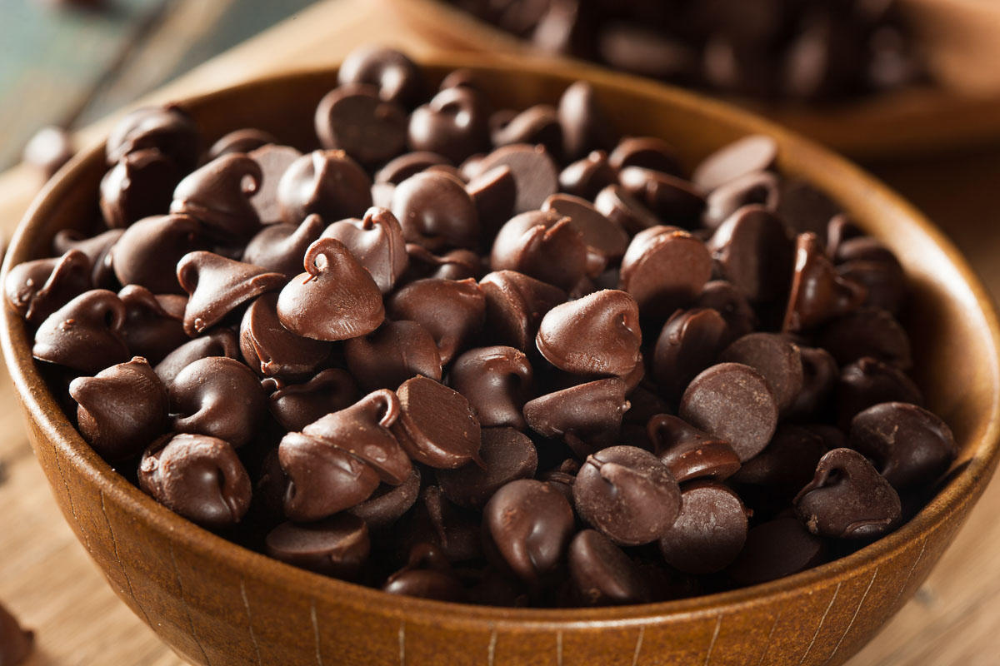
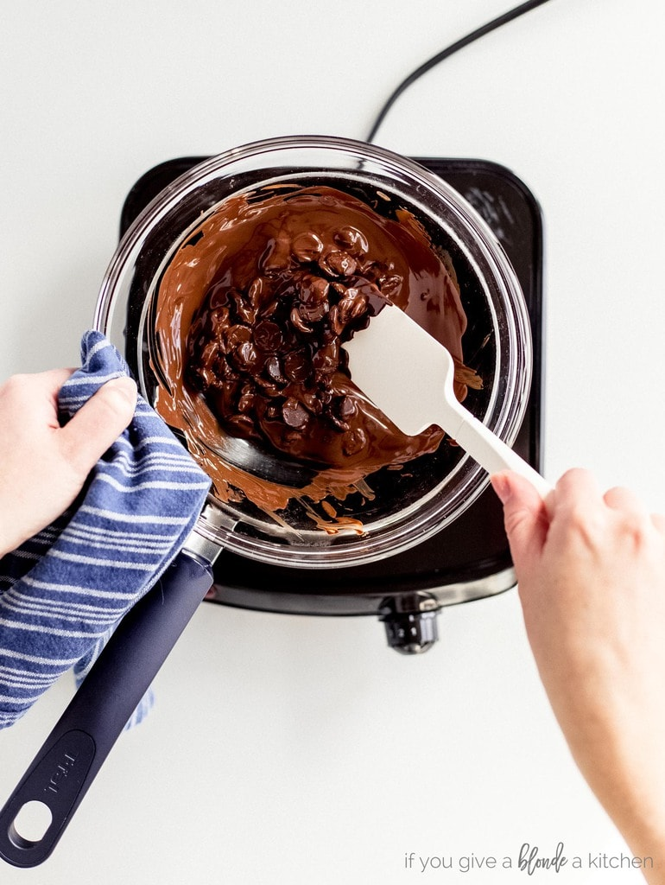
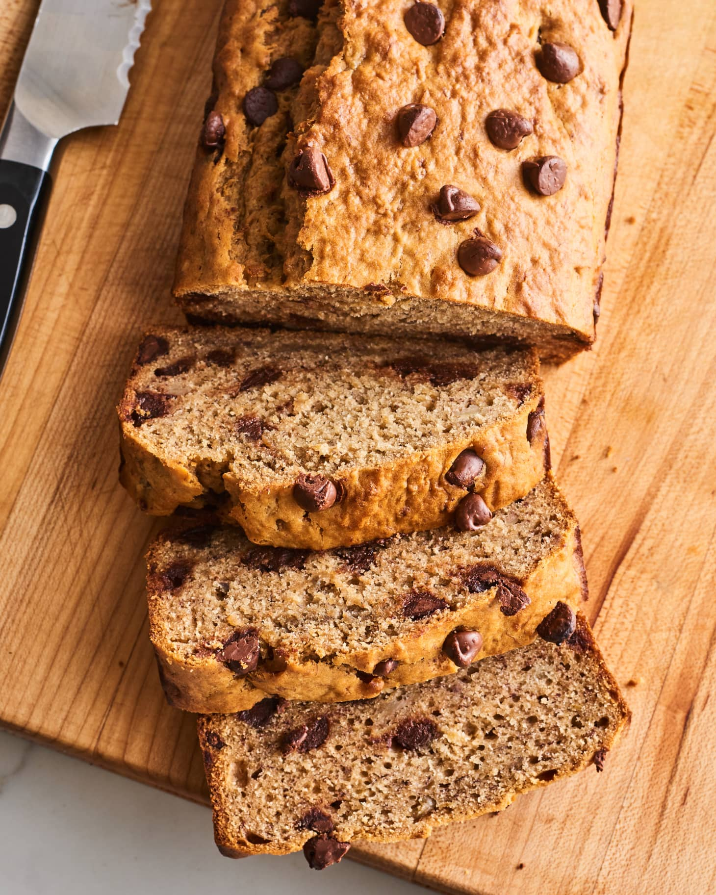
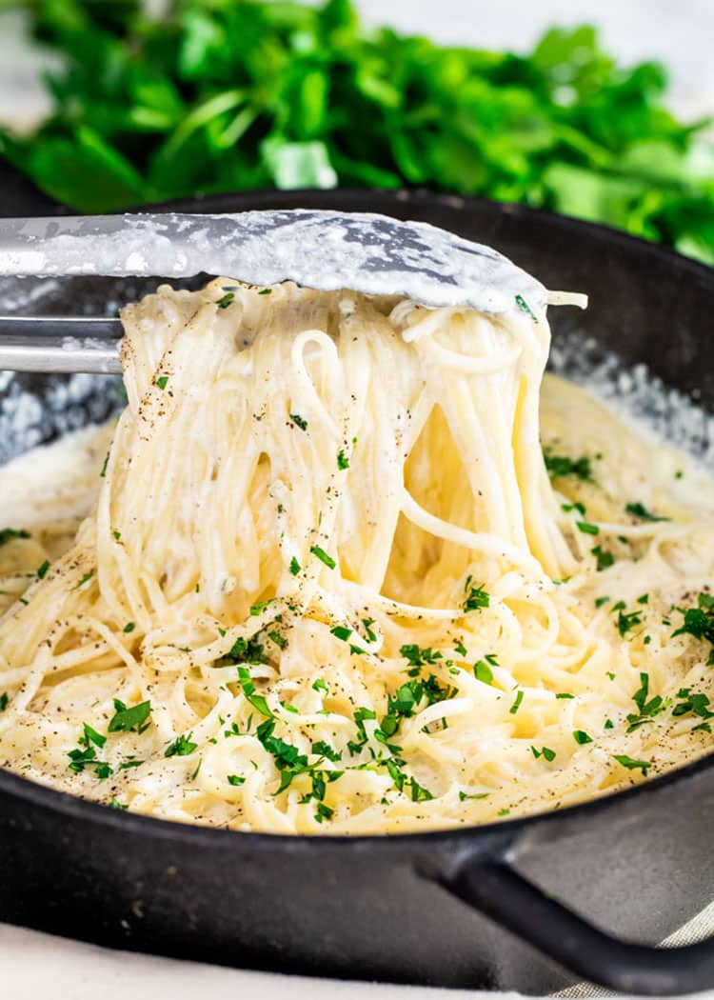
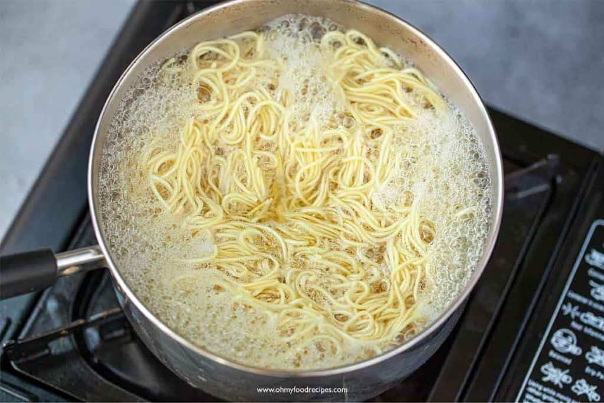
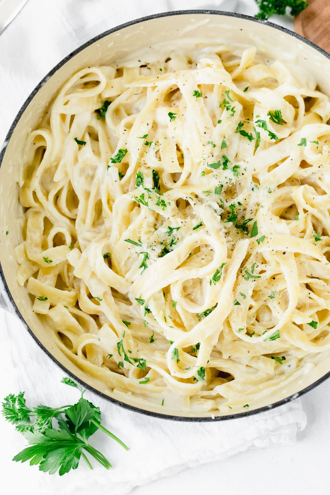
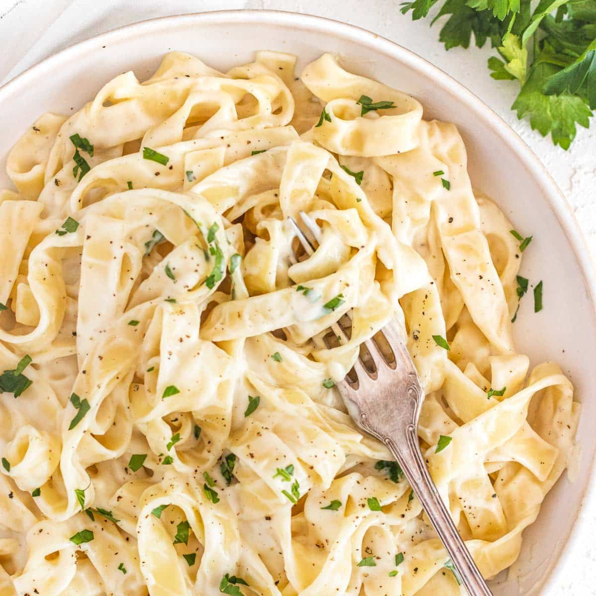

Double Chocolate Chip Cookies
- Origin: Michigan
- Source: Family recipe
- Category: Dessert

My daughter learned to make these cookies at a baking camp at Zingermanns and has tweaked the recipe to fit the taste buds of her siblings. They are extremely sugary so the salt helps to balance it. Note, these cookies are best eaten very quickly.
Ingredients
- Unsalted butter
- Granulated Sugar
- Packed light or dark brown sugar
- Large egg
- Pure vanilla extract
- Semi-sweet chocolate chunks (melted)
- All-purpose flour
- Natural unsweetened cocoa powder
- Baking soda
- Salt
- Semi-sweet chocolate chunks
Recipe Steps
- In a mixing bowl cream together the butter, granulated sugar, and brown sugar
- Add the egg and vanilla extract and beat well
- Add the melted chocolate
- In a separate bowl combine the flour, baking soda, cocoa powder and salt
- Combine the wet and dry ingredients
- Add the unmelted chocolate chunks.
- Form 15 cookies and place on a baking sheet.
- Cooke for 12 to 13 minutes at 350 degrees.
Additional Food Images



Chcoloate Chip Banana Bread
- Origin: American
- Source: https://www.delish.com/cooking/recipe-ideas/a43369646/chocolate-chip-banana-bread-recipe/
- Category: Dessert

This is a tried-and-tested recipe that I have used numerous times for making the perfect chocolate chip banana bread! Not only does it help utilize the bananas that have slowly overripened at the back of the fridge, it ends up creating an incredibly delicious, and relatively healthy, dessert.
Ingredients
- Cooking spray
- 2 cups (240 g) all-purpose flour
- 1 tsp. baking soda
- 1/2 tsp. kosher salt
- 1 large egg plus 1 egg yolk
- 1 cup (200 g) granulated sugar
- 1/2 cup (1 stick) unsalted butter, melted
- 1/4 cup sour cream
- 1 tsp. pure vanilla extract
- 3 ripe bananas, mashed
- 1/2 cup chopped toasted walnuts
- 1/2 cup semisweet chocolate chips
Recipe Steps
- Preheat the oven to 350º. Line a 9"-by-5" loaf pan with parchment and grease with cooking spray.
- In a medium bowl, whisk flour, baking soda, and salt.
- In a large bowl, mix egg, egg yolk, granulated sugar, butter, sour cream, and vanilla. Add bananas and stir until combined. Gradually add dry ingredients to banana mixture until just combined.
- Fold in walnuts and chocolate chips and transfer to prepared pan.
- Bake bread until a tester inserted into the center comes out clean, about 1 hour.
- Let cool 10 minutes in pan, then invert onto a wire rack and let cool completely.
Additional Food Images


Pasta Alfredo
- Origin: Italy / America
- Source: https://cravinghomecooked.com/easy-pasta-alfredo/
- Category: Savory

This is the perfect easy dinner that anyone can make! This pasta has its origins in Italy with the sauce, but later Americanized with garlic and cream. It is so simple yet very versatile.
Ingredients
- 8 ounce pasta
- 4 tablespoons butter
- 2 cloves garlic
- 1½ cups milk
- 1 cup heavy cream
- ½ cup Parmesan cheese
- ¼ teaspoon salt
- ¼ teaspoon pepper
- 2 tablespoons fresh parsley
Recipe Steps
- Cook the pasta according to the package instructions.
- Melt the butter in a large skillet over medium high heat. Add the garlic and cook for 30 seconds, or until fragrant.
- Pour in the milk and cream. Stir consistently to avoid burning on the bottom of the pan until the mixture comes to a boil. Turn the heat down to medium, and mix in the parmesan cheese, salt, and pepper. Adjust the seasoning to your own taste.
- Remove the pan from the heat and mix in the cooked pasta until the sauce begins to thicken. Garnish with parsley, and serve.
Additional Food Images


